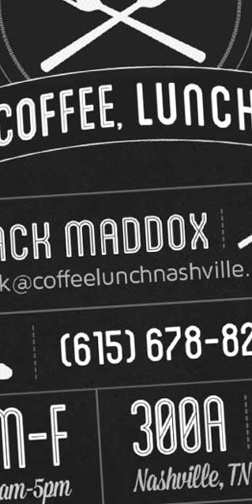
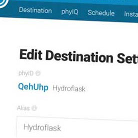
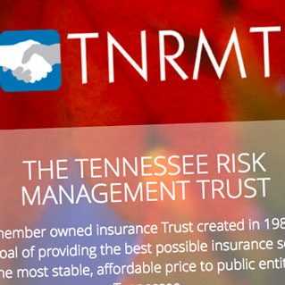
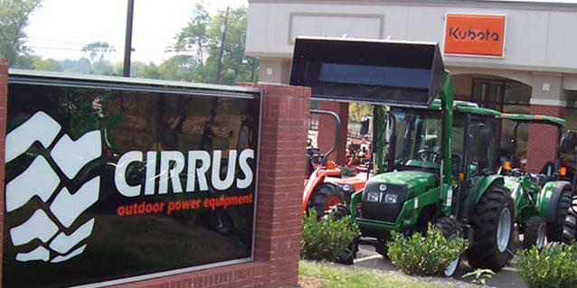
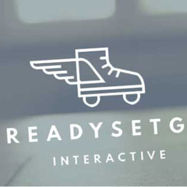
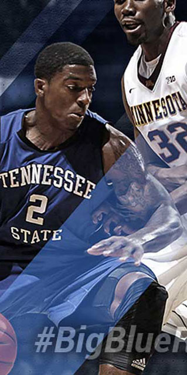
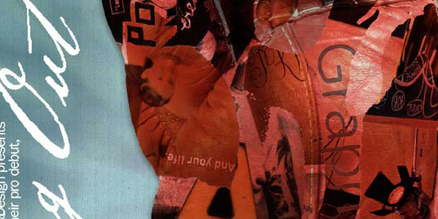

<!DOCTYPE html>
<html>
  <head>
    <title>Lindsey Maddox Makes Websites</title>
    <meta charset="UTF-8">
    <meta name="viewport" content="width=device-width, initial-scale=1">
    <meta name="description" content="">
    <link rel="apple-touch-icon" sizes="180x180" href="/apple-touch-icon.png?v=9BampWPmGp">
    <link rel="icon" type="image/png" sizes="32x32" href="/favicon-32x32.png?v=9BampWPmGp">
    <link rel="icon" type="image/png" sizes="16x16" href="/favicon-16x16.png?v=9BampWPmGp">
    <link rel="manifest" href="/manifest.json?v=9BampWPmGp">
    <link rel="mask-icon" href="/safari-pinned-tab.svg?v=9BampWPmGp" color="#d6a203">
    <link rel="shortcut icon" href="/favicon.ico?v=9BampWPmGp">
    <meta name="theme-color" content="#d6a203">
    <meta name="twitter:card" content="summary_large_image">
    <meta name="twitter:site" content="@lindseyemaddox">
    <meta name="twitter:creator" content="@lindseyemaddox">
    <meta name="twitter:title" content="Lindsey Maddox Makes Websites">
    <meta name="twitter:description" content="Lindsey Maddox is a top-performing web developer and graphic designer with a passion for creating beautiful, functional, fluidly responsive websites.">
    <meta name="twitter:image:src" content="https://www.lindseymaddox.com/_includes/schema/twitter-card.jpg">
    <meta property="og:title" content="Lindsey Maddox Makes Websites">
    <meta property="og:url" content="https://www.lindseymaddox.com">
    <meta property="og:image" content="https://www.lindseymaddox.com/_includes/schema/og-image.jpg">
    <meta property="og:site_name" content="Lindsey Maddox Makes Websites">
    <meta property="og:description" content="Lindsey Maddox is a top-performing web developer and graphic designer with a passion for creating beautiful, functional, fluidly responsive websites.">
    <link rel="stylesheet" type="text/css" href="https://fonts.googleapis.com/css?family=Quicksand:300,400,700">
    <link rel="stylesheet" type="text/css" href="https://s3.amazonaws.com/icomoon.io/12424/LindseyMaddox/style.css?a4cgnq">
    <link rel="stylesheet" type="text/css" href="_styles/compiled.css">
    <script document.createElement('picture')></script>
    <script type="text/javascript" src="_scripts/picturefill.js" async></script>
    <script type="text/javascript" src="https://cdnjs.cloudflare.com/ajax/libs/jquery/3.2.1/jquery.min.js"></script>
    <script type="text/javascript" src="_scripts/fancybox-min.js"></script>
    <script type="text/javascript" src="_scripts/main-min.js"></script>
    <script async src="https://www.googletagmanager.com/gtag/js?id=UA-55633656-1"></script>
    <script>
      window.dataLayer = window.dataLayer || [];
      function gtag(){dataLayer.push(arguments);}
      gtag('js', new Date());
      gtag('config', 'UA-55633656-1');
    </script>
  </head>
</html>
<script type="text/javascript" src="https://unpkg.com/isotope-layout@3/dist/isotope.pkgd.min.js"></script>
<script type="text/javascript">
  $(document).ready(function() {
    $('.fancybox').fancybox();
  
    // init Isotope
    var $grid = $('.isotope-case').isotope({
      itemSelector: '.gallery-item',
      percentPosition: true,
      masonry: {
        columnWidth: '.grid-sizer'
      }
    });
  
    // filter functions
    var filterFns = {
      // show if number is greater than 50
      numberGreaterThan50: function() {
        var number = $(this).find('.number').text();
        return parseInt( number, 10 ) > 50;
      },
      // show if name ends with -ium
      ium: function() {
        var name = $(this).find('.name').text();
        return name.match( /ium$/ );
      }
    };
  
    // bind filter button click
    $('#filters').on( 'click', 'button', function() {
      var filterValue = $( this ).attr('data-filter');
      // use filterFn if matches value
      filterValue = filterFns[ filterValue ] || filterValue;
      $grid.isotope({ filter: filterValue });
    });
  
    // change is-checked class on buttons
    $('.button-group').each( function( i, buttonGroup ) {
      var $buttonGroup = $( buttonGroup );
      $buttonGroup.on( 'click', 'button', function() {
        $buttonGroup.find('.is-checked').removeClass('is-checked');
        $( this ).addClass('is-checked');
      });
    });
  });
  
</script>
<body class="animate-bg subpage evidencepage">
  <div class="grid">
    <header>
      <nav><a href="index.html" class="logo"></a>
        <p class="home"><a href="index.html">Lindsey Maddo<span>x</span></a></p>
        <p class="subhead"> <span>Makes </span><span class="switcher-case"><span class="switcher"> <span>Beautiful</span><span>Responsive</span><span>Fluid</span><span>Kickass</span><span>Pixel-Perfect</span></span></span><span>Websites</span></p>
        <ul>
          <hr>
          <li><a href="bio.html" class="bio">Bio</a></li>
          <li><a href="evidence.html" class="evidence">Evidence</a></li>
          <li><a href="proof.html" class="proof">Proof</a></li>
          <li><a id="connect">Connect</a></li>
        </ul>
        <div id="socials"><a href="https://github.com/lindseyemaddox" target="_blank" class="icon-github"></a><a href="_includes/lindsey-maddox.pdf" class="icon-resume"></a><a href="https://www.linkedin.com/in/lindseymaddox/" target="_blank" class="icon-linkedin"></a><a href="https://codepen.io/lindseyemaddox/#" target="_blank" class="icon-codepen"></a><a href="https://twitter.com/lindseyemaddox" target="_blank" class="icon-twitter"></a><a href="_includes/map.html" class="icon-map fancybox fancybox.iframe"></a><a href="mailto:dev@lindseymaddox.com" class="icon-email"></a>
          <hr>
        </div>
      </nav>
    </header>
    <script>
      $(document).ready(function(){
        $('.fancybox').fancybox();
      });
    </script>
    <div id="filters" class="button-group">
      <button data-filter="*" class="button is-checked">All</button>
      <button data-filter=".design" class="button">Design</button>
      <button data-filter=".development" class="button">Development</button>
      <button data-filter=".web" class="button">Web</button>
      <button data-filter=".print" class="button">Print</button>
      <button data-filter=".branding" class="button">Branding</button>
    </div>
    <div class="isotope-case">
      <div class="grid-sizer gallery-item design development web print branding"><a href="#angryeagle" class="fancybox fancybox">
          <h3 class="title">Angry Eagle Lodge & Outfitters</h3><span class="button">Details</span></a>
        <div id="angryeagle" class="inline">
          <picture><!--[if IE 9]><video style='display: none;'><![endif]-->
            <source srcset="_images/large/angryeagle.jpg, _images/extralarge/angryeagle.jpg 2x" media="(max-width: 2500px)">
            <source srcset="_images/medium/angryeagle.jpg, _images/extramedium/angryeagle.jpg 2x" media="(max-width: 1000px)"><!--[if IE 9]></video><![endif]-->
          </picture>
          <div class="info">
            <h3 class="title">Angry Eagle Lodge &amp; Outfitters</h3>
            <p class="items">Logo Design</p>
            <p class="items">Print Collateral Design</p>
            <p class="items">HTML Email Design</p>
            <p class="items">HTML Email Development</p>
            <p class="items">Website Design</p>
            <p class="items">Website Development</p>
            <p class="details">Everything from business name consultation to website development, this project was tons of fun and required over a year's engagement. The company, a fishing lodge in Alaska, had recently changed ownership and had just started the rebranding process when I was brought on board. The website was built on a CMS that allowed me to incorporate lodge management functionality, guest photo management and distribution, and blogging. </p><a href="http://www.angryeagle.com" target="_blank" class="button">Visit Website</a>
          </div>
        </div>
      </div>
      <div class="gallery-item tall design web development branding print"><a href="#coffeelunch" title="Coffee, Lunch. Website and Branding" rel="web" class="fancybox fancybox">
          <h3 class="title">Coffee, Lunch.</h3><span class="button">Details</span></a>
        <div id="coffeelunch" class="inline">
          <picture><!--[if IE 9]><video style='display: none;'><![endif]-->
            <source srcset="_images/large/coffeelunch.jpg, _images/extralarge/coffeelunch.jpg 2x" media="(max-width: 2500px)">
            <source srcset="_images/medium/coffeelunch.jpg, _images/extramedium/coffeelunch.jpg 2x" media="(max-width: 1000px)"><!--[if IE 9]></video><![endif]-->
          </picture>
          <div class="info">
            <h3 class="title">Coffee, Lunch. </h3>
            <p class="items">Print Collateral Design</p>
            <p class="items">HTML Email Design</p>
            <p class="items">HTML Email Development</p>
            <p class="items">Website Design</p>
            <p class="items">Website Development</p>
            <p class="details">Completed for a now-closed daytime restaurant downtown called, Coffee, Lunch. </p>
          </div>
        </div>
      </div>
      <div class="gallery-item print design branding"><a href="#peg" title="Peg Petrelli Branding and Print Design" rel="print" class="fancybox fancybox">
          <h3 class="title">Peg Petrelli</h3><span class="button">Details</span></a>
        <div id="peg" class="inline">
          <picture><!--[if IE 9]><video style='display: none;'><![endif]-->
            <source srcset="_images/large/petrelli.jpg, _images/extralarge/petrelli.jpg 2x" media="(max-width: 2500px)">
            <source srcset="_images/medium/petrelli.jpg, _images/extramedium/petrelli.jpg 2x" media="(max-width: 1000px)"><!--[if IE 9]></video><![endif]-->
          </picture>
          <div class="info">
            <h3 class="title">Peg Petrelli Election Campaign Materials</h3>
            <p class="items">Logo Design</p>
            <p class="items">Print Collateral Design</p>
            <p class="details">Logo, brochure, yard signs, bumper sticker, magnet, tshirt, email signature, social media graphics, letterhead, event invitations, and flyer created for successful local alderman election campaign. </p>
          </div>
        </div>
      </div>
      <div class="gallery-item rect web development"><a href="#specialolympics" class="fancybox fancybox">
          <h3 class="title">Special Olympics</h3><span class="button">Details</span></a>
        <div id="specialolympics" class="inline">
          <picture><!--[if IE 9]><video style='display: none;'><![endif]-->
            <source srcset="_images/large/specialolympics.jpg, _images/extralarge/specialolympics.jpg 2x" media="(max-width: 2500px)">
            <source srcset="_images/medium/specialolympics.jpg, _images/extramedium/specialolympics.jpg 2x" media="(max-width: 1000px)"><!--[if IE 9]></video><![endif]-->
          </picture>
          <div class="info">
            <h3 class="title">Special Olympics TN</h3>
            <p class="items">Website Development</p>
            <p class="details">Integrated with an in-house Content Management System, I was able to make responsive planning choices during the build of this site.</p><a href="http://specialolympicstn.org/" target="_blank" class="button">Visit Website</a>
          </div>
        </div>
      </div>
      <div class="gallery-item tall web design development branding"><a href="#tuba" class="fancybox fancybox">
          <h3 class="title">Tennessee Technological University R. Winston Morris Tuba Collection Museum</h3><span class="button">Details</span></a>
        <div id="tuba" class="inline">
          <picture><!--[if IE 9]><video style='display: none;'><![endif]-->
            <source srcset="_images/large/tuba.jpg, _images/extralarge/tuba.jpg 2x" media="(max-width: 2500px)">
            <source srcset="_images/medium/tuba.jpg, _images/extramedium/tuba.jpg 2x" media="(max-width: 1000px)"><!--[if IE 9]></video><![endif]-->
          </picture>
          <div class="info">
            <h3 class="title">Tennessee Technological University R. Winston Morris Tuba Collection Museum</h3>
            <p class="items">Branding</p>
            <p class="items">Web Application Design</p>
            <p class="items">Web Application Development</p>
            <p class="details">Powered by the Physical Web, this app was designed to connect the collection database to the physical museum experience. </p>
          </div>
        </div>
      </div>
      <div class="gallery-item tall design print"><a href="#kitty" title="Country Music Greats Catalog" rel="print" class="fancybox fancybox">
          <h3 class="title">Country Music Greats Catalog</h3><span class="button">Details</span></a>
        <div id="kitty" class="inline">
          <picture><!--[if IE 9]><video style='display: none;'><![endif]-->
            <source srcset="_images/large/kitty.jpg, _images/extralarge/kitty.jpg 2x" media="(max-width: 2500px)">
            <source srcset="_images/medium/kitty.jpg, _images/extramedium/kitty.jpg 2x" media="(max-width: 1000px)"><!--[if IE 9]></video><![endif]-->
          </picture>
          <div class="info">
            <h3 class="title">Country Music Greats Catalog</h3>
            <p class="items">Print Collateral Design</p>
            <p class="details">Completed during tenure at Catalog Music Company. </p>
          </div>
        </div>
      </div>
      <div class="gallery-item design web design"><a href="#fasterfitness" title="Faster Fitness Website" rel="web" class="fancybox fancybox">
          <h3 class="title">Faster Fitness</h3><span class="button">Details</span></a>
        <div id="fasterfitness" class="inline">
          <picture><!--[if IE 9]><video style='display: none;'><![endif]-->
            <source srcset="_images/large/fasterfitness.jpg, _images/extralarge/fasterfitness.jpg 2x" media="(max-width: 2500px)">
            <source srcset="_images/medium/fasterfitness.jpg, _images/extramedium/fasterfitness.jpg 2x" media="(max-width: 1000px)"><!--[if IE 9]></video><![endif]-->
          </picture>
          <div class="info">
            <h3 class="title">Faster Fitness</h3>
            <p class="items">Website Design</p>
            <p class="details">Completed during tenure at Drive Social Media. </p>
          </div>
        </div>
      </div>
      <div class="gallery-item design web development branding design"><a href="#precision" title="Precision Metalwork Website and Branding" rel="web" class="fancybox fancybox">
          <h3 class="title">Precision Metalwork</h3><span class="button">Details</span></a>
        <div id="precision" class="inline">
          <picture><!--[if IE 9]><video style='display: none;'><![endif]-->
            <source srcset="_images/large/precision.jpg, _images/extralarge/precision.jpg 2x" media="(max-width: 2500px)">
            <source srcset="_images/medium/precision.jpg, _images/extramedium/precision.jpg 2x" media="(max-width: 1000px)"><!--[if IE 9]></video><![endif]-->
          </picture>
          <div class="info">
            <h3 class="title">Precision Metalwork</h3>
            <p class="items">Logo Design</p>
            <p class="items">Website Design</p>
            <p class="items">Website Development</p>
            <p class="details">Definitely a favorite project for an awesome client. This static site was built fluidly responsive, working with a logo developer and a content specialist. The content specialist did a great job of writing varied content, allowing me to design lots of variety in layouts. Performing well, this site does a great job of eye leading and lead generation. </p><a href="http://precisionmetalwork.com/" target="_blank" class="button">Visit Website</a>
          </div>
        </div>
      </div>
      <div class="gallery-item web development"><a href="#bkon" title="BKON Connect Website and Beacon Management Application" rel="web" class="fancybox fancybox">
          <h3 class="title">BKON Connect</h3><span class="button">Details</span></a>
        <div id="bkon" class="inline">
          <picture><!--[if IE 9]><video style='display: none;'><![endif]-->
            <source srcset="_images/large/bkon.jpg, _images/extralarge/bkon.jpg 2x" media="(max-width: 2500px)">
            <source srcset="_images/medium/bkon.jpg, _images/extramedium/bkon.jpg 2x" media="(max-width: 1000px)"><!--[if IE 9]></video><![endif]-->
          </picture>
          <div class="info">
            <h3 class="title">BKON Connect</h3>
            <p class="items">Web Application Development</p>
            <p class="details">BKON Connect is a Customer Directed Engagement Platform that develops software and hardware tools which can turn any mobile app into a browser for the Internet of Things, allowing people to join digital experiences in physical spaces – any content, activity, app, location, touchpoint anywhere.</p>
            <p class="details">BKON’s PHY platform enables apps with “touchpoint browsing,” which lets people browse digital touchpoints in a physical place, see a quick preview of the content and control whether to select the content. PHY is an enterprise class, end-to-end platform that manages all types of digital touchpoints, including Physical Web beacons, QR codes, and NFC tags. PHY lets retailers, galleries and venues of all types quickly and easily change content across multiple locations and for multiple audiences, driving the ultimate proximity customer engagement and interaction.</p><a href="https://www.bkon.com" target="_blank" class="button">Visit Website</a>
          </div>
        </div>
      </div>
      <div class="gallery-item tall web design development branding"><a href="#simplypeople" class="fancybox fancybox">
          <h3 class="title">Simply <span class="nobreak">People</span></h3><span class="button">Details</span></a>
        <div id="simplypeople" class="inline">
          <picture><!--[if IE 9]><video style='display: none;'><![endif]-->
            <source srcset="_images/large/simply-people.jpg, _images/extralarge/simply-people.jpg 2x" media="(max-width: 2500px)">
            <source srcset="_images/medium/simply-people.jpg, _images/extramedium/simply-people.jpg 2x" media="(max-width: 1000px)"><!--[if IE 9]></video><![endif]-->
          </picture>
          <div class="info">
            <h3 class="title">Simply People Website and Branding</h3>
            <p class="items">Web Design</p>
            <p class="items">Web Development</p>
            <p class="items">Branding</p>
            <p class="details">Website splash page design with looping video background for Nashville-based staffing agency. </p>
          </div>
        </div>
      </div>
      <div class="gallery-item web design"><a href="#kenricks" title="Kenrick's Website Design" rel="web" class="fancybox fancybox">
          <h3 class="title">Kenrick's</h3><span class="button">Details</span></a>
        <div id="kenricks" class="inline">
          <picture><!--[if IE 9]><video style='display: none;'><![endif]-->
            <source srcset="_images/large/kenricks.jpg, _images/extralarge/kenricks.jpg 2x" media="(max-width: 2500px)">
            <source srcset="_images/medium/kenricks.jpg, _images/extramedium/kenricks.jpg 2x" media="(max-width: 1000px)"><!--[if IE 9]></video><![endif]-->
          </picture>
          <div class="info">
            <h3 class="title">Kenrick's Meats</h3>
            <p class="items">Website Design</p>
            <p class="details">Meat retailer website design completed during tenure at Drive Social Media. </p>
          </div>
        </div>
      </div>
      <div class="gallery-item development design web"><a href="#tnrmt" title="Tennessee Risk Management Trust website" rel="web" class="fancybox fancybox">
          <h3 class="title">Tennessee Risk Management Trust website</h3><span class="button">Details</span></a>
        <div id="tnrmt" class="inline">
          <picture><!--[if IE 9]><video style='display: none;'><![endif]-->
            <source srcset="_images/large/tnrmt.jpg, _images/extralarge/tnrmt.jpg 2x" media="(max-width: 2500px)">
            <source srcset="_images/medium/tnrmt.jpg, _images/extramedium/tnrmt.jpg 2x" media="(max-width: 1000px)"><!--[if IE 9]></video><![endif]-->
          </picture>
          <div class="info">
            <h3 class="title">Tennessee Risk Management Trust website</h3>
            <p class="items">Web Design</p>
            <p class="items">Web Development</p>
            <p class="details">Web design and development for the Tennessee Risk Management Trust, featuring a sortable Resources page.</p><a href="http://www.tnrmt.com" target="_blank" class="button">Visit Website</a>
          </div>
        </div>
      </div>
      <div class="gallery-item web design development"><a href="#sounds" title="Nashville Sounds Food Finder App" rel="web" class="fancybox fancybox">
          <h3 class="title">Nashville Sounds</h3><span class="button">Details</span></a>
        <div id="sounds" class="inline">
          <picture><!--[if IE 9]><video style='display: none;'><![endif]-->
            <source srcset="_images/large/sounds.jpg, _images/extralarge/sounds.jpg 2x" media="(max-width: 2500px)">
            <source srcset="_images/medium/sounds.jpg, _images/extramedium/sounds.jpg 2x" media="(max-width: 1000px)"><!--[if IE 9]></video><![endif]-->
          </picture>
          <div class="info">
            <h3 class="title">Nashville Sounds Gameday Food Finder App</h3>
            <p class="items">Website Design</p>
            <p class="items">Website Development</p>
            <p class="details">Completed for BKON Connect as part of a "first ballpark on the Physical Web" project in 2016, this web application (designed to be viewed on a mobile device) helps baseball game-goers find the exact cheesy dipping sauce their heart desires. </p><a href="http://foodbeacon.com/" target="_blank" class="button">Visit Application</a>
          </div>
        </div>
      </div>
      <div class="gallery-item rect print design"><a href="#cirrus" title="Cirrus Outdoor Power Equipment Branding and Signage" rel="web" class="fancybox fancybox">
          <h3 class="title">Cirrus Outdoor Power Equipment</h3><span class="button">Details</span></a>
        <div id="cirrus" class="inline">
          <picture><!--[if IE 9]><video style='display: none;'><![endif]-->
            <source srcset="_images/large/cirrus.jpg, _images/extralarge/cirrus.jpg 2x" media="(max-width: 2500px)">
            <source srcset="_images/medium/cirrus.jpg, _images/extramedium/cirrus.jpg 2x" media="(max-width: 1000px)"><!--[if IE 9]></video><![endif]-->
          </picture>
          <div class="info">
            <h3 class="title">Cirrus Outdoor Power Equipment</h3>
            <p class="items">Logo Design</p>
            <p class="items">Print Collateral Design</p>
            <p class="items">Indoor/Outdoor Signage Design</p>
            <p class="items">Website Design</p>
            <p class="items">Website Development</p>
            <p class="details">Designed in 2004, the branding goal was that the newly-acquired business only sold and serviced lawnmowers at the time, but had future plans to be a full-fledged tractor dealership. The challenge was to create a mark that could be future-proof!</p>
          </div>
        </div>
      </div>
      <div class="gallery-item web development design branding"><a href="#rsg" title="Ready Set Go Website Design and Development" rel="print" class="fancybox fancybox">
          <h3 class="title">Ready Set Go</h3><span class="button">Details</span></a>
        <div id="rsg" class="inline">
          <picture><!--[if IE 9]><video style='display: none;'><![endif]-->
            <source srcset="_images/large/rsg.jpg, _images/extralarge/rsg.jpg 2x" media="(max-width: 2500px)">
            <source srcset="_images/medium/rsg.jpg, _images/extramedium/rsg.jpg 2x" media="(max-width: 1000px)"><!--[if IE 9]></video><![endif]-->
          </picture>
          <div class="info">
            <h3 class="title">Ready Set Go</h3>
            <p class="items">Logo Design</p>
            <p class="items">Print Collateral Design</p>
            <p class="items">Website Design</p>
            <p class="items">Website Development</p>
            <p class="details">Let’s get this straight: We are not your typical creative agency. </p>
            <p class="details">Ready Set Go is a collective of freelancers who have combined their creative talents to provide collaborative digital marketing solutions. We take a lot of pride in our work. A lot. After all, our names and reputations are on the line—so when we do something, we go for the win. </p>
            <p class="details">And just like our setup, our entire approach to the creative process is unique. Rather than focus our work on a specific industry, service, or product, we prefer to focus on a specific type of client. That is, we specialize in working with people who aren’t afraid to rebel against tradition, who love pushing creative boundaries, and who don’t tend to use the word leverage as a verb. </p>
            <p class="details">But we're more than creative professionals. We're also business owners and entrepreneurs who understand the responsibilities and challenges that come with owning and operating a business. </p>
          </div>
        </div>
      </div>
      <div class="gallery-item rect web development"><a href="#dykes" title="Dykes Foodservice Website" rel="web" class="fancybox fancybox">
          <h3 class="title">Dykes Foodservice</h3><span class="button">Details</span></a>
        <div id="dykes" class="inline">
          <picture><!--[if IE 9]><video style='display: none;'><![endif]-->
            <source srcset="_images/large/dykes.jpg, _images/extralarge/dykes.jpg 2x" media="(max-width: 2500px)">
            <source srcset="_images/medium/dykes.jpg, _images/extramedium/dykes.jpg 2x" media="(max-width: 1000px)"><!--[if IE 9]></video><![endif]-->
          </picture>
          <div class="info">
            <h3 class="title">Dykes Foodservice website</h3>
            <p class="items">Website Development</p>
            <p class="details">Responsive website build completed during employment with iDesign, Inc. </p><a href="http://dykesfoodservice.com/" target="_blank" class="button">Visit Website</a>
          </div>
        </div>
      </div>
      <div class="gallery-item rect design print branding"><a href="#aidswalk" title="Nashville Aids Walk Poster" rel="branding" class="fancybox fancybox">
          <h3 class="title">Nashville Aids Walk</h3><span class="button">Details</span></a>
        <div id="aidswalk" class="inline">
          <picture><!--[if IE 9]><video style='display: none;'><![endif]-->
            <source srcset="_images/large/aidswalk.jpg, _images/extralarge/aidswalk.jpg 2x" media="(max-width: 2500px)">
            <source srcset="_images/medium/aidswalk.jpg, _images/extramedium/aidswalk.jpg 2x" media="(max-width: 1000px)"><!--[if IE 9]></video><![endif]-->
          </picture>
          <div class="info">
            <h3 class="title">Nashville Aids Walk</h3>
            <p class="items">Print Collateral Design</p>
            <p class="details">The proposed centerpiece design for the Nashville Aids Walk, 2005.</p>
          </div>
        </div>
      </div>
      <div class="gallery-item web development"><a href="#connico" title="Connico Website Development" rel="web" class="fancybox fancybox">
          <h3 class="title">Connico</h3><span class="button">Details</span></a>
        <div id="connico" class="inline">
          <picture><!--[if IE 9]><video style='display: none;'><![endif]-->
            <source srcset="_images/large/connico.jpg, _images/extralarge/connico.jpg 2x" media="(max-width: 2500px)">
            <source srcset="_images/medium/connico.jpg, _images/extramedium/connico.jpg 2x" media="(max-width: 1000px)"><!--[if IE 9]></video><![endif]-->
          </picture>
          <div class="info">
            <h3 class="title">Connico, Incorporated</h3>
            <p class="items">Website Development</p>
            <p class="details">Non-responsive website (client specification) completed during tenure at iDesign. </p><a href="http://www.connico.com/" target="_blank" class="button">Visit Website</a>
          </div>
        </div>
      </div>
      <div class="gallery-item rect print design"><a href="#travis" title="Travis Meadows Record Design" rel="web" class="fancybox fancybox">
          <h3 class="title">Travis Meadows</h3><span class="button">Details</span></a>
        <div id="travis" class="inline">
          <picture><!--[if IE 9]><video style='display: none;'><![endif]-->
            <source srcset="_images/large/travis.jpg, _images/extralarge/travis.jpg 2x" media="(max-width: 2500px)">
            <source srcset="_images/medium/travis.jpg, _images/extramedium/travis.jpg 2x" media="(max-width: 1000px)"><!--[if IE 9]></video><![endif]-->
          </picture>
          <div class="info">
            <h3 class="title">Travis Meadows</h3>
            <p class="items">Print Collateral Design</p>
            <p class="details">Full-size record cover and insert design for Nashville Singer/Songwriter Travis Meadows. </p>
          </div>
        </div>
      </div>
      <div class="gallery-item web development"><a href="#neighborhood" title="Neighborhood Health Website Development" rel="web" class="fancybox fancybox">
          <h3 class="title">Neighborhood Health</h3><span class="button">Details</span></a>
        <div id="neighborhood" class="inline">
          <picture><!--[if IE 9]><video style='display: none;'><![endif]-->
            <source srcset="_images/large/neighborhoodhealth.jpg, _images/extralarge/neighborhoodhealth.jpg 2x" media="(max-width: 2500px)">
            <source srcset="_images/medium/neighborhoodhealth.jpg, _images/extramedium/neighborhoodhealth.jpg 2x" media="(max-width: 1000px)"><!--[if IE 9]></video><![endif]-->
          </picture>
          <div class="info">
            <h3 class="title">Neighborhood Health</h3>
            <p class="items">Website Development</p>
            <p class="details">Completed during tenure at iDesign, Inc.</p><a href="http://neighborhoodhealthtn.org/" target="_blank" class="button">Visit Website</a>
          </div>
        </div>
      </div>
      <div class="gallery-item web development design"><a href="#martha" title="Martha O'Bryan Center Website" rel="web" class="fancybox fancybox">
          <h3 class="title">Martha O'Bryan Center</h3><span class="button">Details</span></a>
        <div id="martha" class="inline">
          <picture><!--[if IE 9]><video style='display: none;'><![endif]-->
            <source srcset="_images/large/martha.jpg, _images/extralarge/martha.jpg 2x" media="(max-width: 2500px)">
            <source srcset="_images/medium/martha.jpg, _images/extramedium/martha.jpg 2x" media="(max-width: 1000px)"><!--[if IE 9]></video><![endif]-->
          </picture>
          <div class="info">
            <h3 class="title">Martha O'Bryan Center</h3>
            <p class="items">Website Design</p>
            <p class="items">Website Development</p>
            <p class="details">Website designed and developed for Nashville Neighborhood outreach Center, Martha O'Bryan Center. A major win in the UX of this site was the consolidation of 16 individual forms across the former site to one consolidated user-advancing form on the rebuild. </p><a href="http://www.marthaobryan.org/" target="_blank" class="button">Visit Website</a>
          </div>
        </div>
      </div>
      <div class="gallery-item tall print web design development"><a href="#inquicker" title="InQuicker Website and Print Collateral" rel="print" class="fancybox fancybox">
          <h3 class="title">InQuicker</h3><span class="button">Details</span></a>
        <div id="inquicker" class="inline">
          <picture><!--[if IE 9]><video style='display: none;'><![endif]-->
            <source srcset="_images/large/inquicker.jpg, _images/extralarge/inquicker.jpg 2x" media="(max-width: 2500px)">
            <source srcset="_images/medium/inquicker.jpg, _images/extramedium/inquicker.jpg 2x" media="(max-width: 1000px)"><!--[if IE 9]></video><![endif]-->
          </picture>
          <div class="info">
            <h3 class="title">InQuicker</h3>
            <p class="items">Print Collateral Design</p>
            <p class="items">HTML Email Design</p>
            <p class="items">HTML Email Development</p>
            <p class="items">Website Design</p>
            <p class="items">Website Development</p>
            <p class="details">A startup eventually bought out by Stericycle, this project included lots of fun infographics, presentation marerials, sales sheets, and ultimately the Wordpress-powered website.</p><a href="https://inquicker.com/" target="_blank" class="button">Visit Website</a>
          </div>
        </div>
      </div>
      <div class="gallery-item web development"><a href="#sef" title="Southeast Financial Website" rel="web" class="fancybox fancybox">
          <h3 class="title">Southeast Financial</h3><span class="button">Details</span></a>
        <div id="sef" class="inline">
          <picture><!--[if IE 9]><video style='display: none;'><![endif]-->
            <source srcset="_images/large/sef.jpg, _images/extralarge/sef.jpg 2x" media="(max-width: 2500px)">
            <source srcset="_images/medium/sef.jpg, _images/extramedium/sef.jpg 2x" media="(max-width: 1000px)"><!--[if IE 9]></video><![endif]-->
          </picture>
          <div class="info">
            <h3 class="title">Southeast Financial </h3>
            <p class="items">Website Development</p>
            <p class="details">Completed during tenure at iDesign, Inc. </p>
          </div>
        </div>
      </div>
      <div class="gallery-item branding design"><a href="#longhaul" title="Long Haul logo" rel="print" class="fancybox fancybox">
          <h3 class="title">Long Haul</h3><span class="button">Details</span></a>
        <div id="longhaul" class="inline">
          <picture><!--[if IE 9]><video style='display: none;'><![endif]-->
            <source srcset="_images/large/longhaul.jpg, _images/extralarge/longhaul.jpg 2x" media="(max-width: 2500px)">
            <source srcset="_images/medium/longhaul.jpg, _images/extramedium/longhaul.jpg 2x" media="(max-width: 1000px)"><!--[if IE 9]></video><![endif]-->
          </picture>
          <div class="info">
            <h3 class="title">Long Haul</h3>
            <p class="items">Logo Design</p>
            <p class="details">Created in 2006</p>
          </div>
        </div>
      </div>
      <div class="gallery-item tall web development"><a href="#tsu" title="Tennessee State University Men's Basketball Team Website" rel="web" class="fancybox fancybox">
          <h3 class="title">Tennessee State University Men's Basketball Team</h3><span class="button">Details</span></a>
        <div id="tsu" class="inline">
          <picture><!--[if IE 9]><video style='display: none;'><![endif]-->
            <source srcset="_images/large/tsu.jpg, _images/extralarge/tsu.jpg 2x" media="(max-width: 2500px)">
            <source srcset="_images/medium/tsu.jpg, _images/extramedium/tsu.jpg 2x" media="(max-width: 1000px)"><!--[if IE 9]></video><![endif]-->
          </picture>
          <div class="info">
            <h3 class="title">Tennessee State University Men's Basketball Team</h3>
            <p class="items">Website Development</p>
            <p class="details">Completed during tenure at iDesign, Inc. </p>
          </div>
        </div>
      </div>
      <div class="gallery-item print design"><a href="#symphony" title="Nashville Symphony Print Design" rel="print" class="fancybox fancybox">
          <h3 class="title">Nashville Symphony</h3><span class="button">Details</span></a>
        <div id="symphony" class="inline">
          <picture><!--[if IE 9]><video style='display: none;'><![endif]-->
            <source srcset="_images/large/symphony.jpg, _images/extralarge/symphony.jpg 2x" media="(max-width: 2500px)">
            <source srcset="_images/medium/symphony.jpg, _images/extramedium/symphony.jpg 2x" media="(max-width: 1000px)"><!--[if IE 9]></video><![endif]-->
          </picture>
          <div class="info">
            <h3 class="title">Nashville Symphony</h3>
            <p class="items">Print Collateral Design</p>
            <p class="details">Completed during tenure at Nashville Symphony.</p>
          </div>
        </div>
      </div>
      <div class="gallery-item rect print design"><a href="#watkins" title="Watkins College of Art, Design &amp; Film Poster" rel="web" class="fancybox fancybox">
          <h3 class="title">Watkins College <span class="nobreak">of Art, </span><span class="nobreak">Design &amp; Film</span></h3><span class="button">Details</span></a>
        <div id="watkins" class="inline">
          <picture><!--[if IE 9]><video style='display: none;'><![endif]-->
            <source srcset="_images/large/watkins.jpg, _images/extralarge/watkins.jpg 2x" media="(max-width: 2500px)">
            <source srcset="_images/medium/watkins.jpg, _images/extramedium/watkins.jpg 2x" media="(max-width: 1000px)"><!--[if IE 9]></video><![endif]-->
          </picture>
          <div class="info">
            <h3 class="title">Watkins College <span class="nobreak">of Art, </span><span class="nobreak">Design & Film</span></h3>
            <p class="items">Print Collateral Design</p>
            <p class="details">Poster and accompanying giveaway items completed for the 2006 Graphic Design Senior Show at Watkins College of Art, Design, and Film. </p>
          </div>
        </div>
      </div>
    </div>
  </div>
</body>